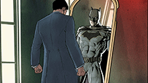

The Batman
History
Batman is the superhero protector of Gotham City, a man dressed like a bat who fights against evil and strikes terror into the hearts of criminals everywhere. In his secret identity he is Bruce Wayne, billionaire industrialist and notorious playboy. Although he has no superhuman powers, he is one of the world's smartest men and greatest fighters. His physical prowess and technical ingenuity make him an incredibly dangerous opponent. He is also a founding member of the Justice League.
The Justice League
While investigating the appearance of Parademons, Batman encountered Green Lantern for the first time, and the two teamed up. Believing them to be aliens, the pair sought Superman for answers, and he attacked them, thinking they were a threat, prompting Lantern to call on The Flash for help until Superman was convinced of their good intentions. Joined by Wonder Woman, Aquaman and Cyborg in fighting off the Parademons attack, the team soon learned that Darkseid of Apokolips was behind the invasion. It was Batman who convinced the heroes to work together as a team, and then secretly travelled to Apokolips in search of a kidnapped Superman, whom he then rescued from Darkseid's torturers. Upon their return to Earth, they forced Darkseid back to his homeworld, and received praise and recognition. Batman insisted that they remain a team in order to maintain public approval.